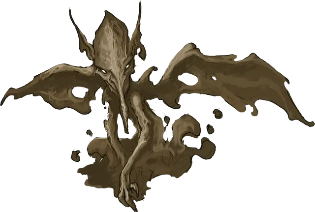

Грязевой мефит
Mud Mephit
Маленький Элементаль, нейтрально-злой

Класс Доспеха 11
Хиты 27 (6к6 + 6)
Скорость 20 футов, плавая 20 футов, летая 20 футов
| мод | спас | ||
|---|---|---|---|
| СИЛ | 8 | −1 | −1 |
| ЛОВ | 12 | +1 | +1 |
| ТЕЛ | 12 | +1 | +1 |
| мод | спас | ||
|---|---|---|---|
| ИНТ | 9 | −1 | −1 |
| МДР | 11 | +0 | +0 |
| ХАР | 7 | −2 | −2 |
Навыки Скрытность +3
Иммунитет к урону яд
Иммунитет к состояниям отравление
Чувства тёмное зрение 60 футов, пассивное Восприятие 10
Языки Акван, Терран
Опасность 1/4 (50 опыта)
Бонус мастерства +2
Среда обитания Болото
Особенности
Предсмертная вспышка. Когда мефит умирает, он разлетается во все стороны липкой грязью. Все существа с размером не больше Среднего в пределах 5 футов от него должны преуспеть в спасброске Ловкости Сл 11, иначе станут опутанными до конца своего следующего хода.
Обманчивая внешность. Пока мефит остаётся без движения, он неотличим от обычной кучи грязи.
Вариант: призыв мефита. У некоторых мефитов может быть действие, позволяющее им призывать других мефитов.
Призыв мефитов (1/день). У мефита есть 25% шанс призвать 1к4 мефита одной с ним разновидности. Призванные мефиты появляются в свободном пространстве в пределах 60 футов от призывателя, действуют как союзники призывателя, и не могут призывать других мефитов. Они остаются в течение 1 минуты, либо до тех пор, пока не убьют их или призвавшего их, или пока призыватель не отпустит их действием.
Действия
Кулаки. . Рукопашная атака оружием: +3 к попаданию, досягаемость 5 футов, одно существо. Попадание: Дробящий урон 4 (1к6+1).
Грязевое дыхание (перезарядка 6). Мефит изрыгает липкую грязь на одно существо, находящееся в пределах 5 футов от него. Если размер цели не больше Среднего, она должна преуспеть в спасброске Ловкости Сл 11, иначе станет опутанной на 1 минуту. Существо может повторять этот спасбросок в конце каждого своего хода, оканчивая эффект на себе при успехе.
Описание
Грязевые мефиты медлительны и маслянисты. Они состоят из земли и воды. Они будут жаловаться на жизнь любому, кто станет их слушать, и будут беспрестанно требовать к себе внимания и выпрашивать подарки.
Мефиты — своенравные, похожие на бесов существа, родом со стихийных планов. Есть шесть разновидностей мефитов, каждая из которых представляет собой смесь двух стихий.
Мефиты эти нестареющие озорники, во множестве населяющие Стихийные Планы и Стихийный Хаос. Они также нередко находят пути на Материальный План, где предпочитают обитать в местах, богатых их родными стихиями. Например, магмовый мефит состоит из огня и земли, и предпочитает обитать внутри вулканов, в то время как ледяной мефит, состоящий из воздуха и воды, предпочитает места, где похолоднее.
Стихийная натура. Мефиту не нужны еда, питье и сон.
См. дополнительно статью: "Бестиарий: Мефиты"